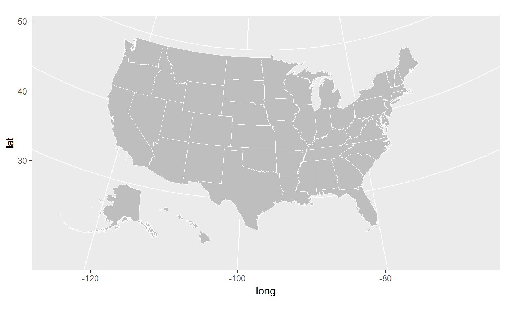

The urbnmapr package provides state and county shapefiles in tibble format that is compatible to map with ggplot2.
Shapefiles include Alaska and Hawaii, transformed to be displayed as insets within the continental United States.
This package is heavily inspired by and derived in part from the fiftystater package by William Murphy. In contrast, urbnmapr:
- Uses shapefiles from the US Census Bureau
- Converts the shapefile data to a
tibbledataframe - Adds various identifiers for merging
- Includes a county-level shapefile
Installation
You can install the latest version of urbnmapr from GitHub:
# install.packages("devtools")
devtools::install_github("UrbanInstitute/urbnmapr")Usage
urbnmapr contains two tibble dataframes:
statescounties
The states and counties tibbles can be used with geom_polygon() and coord_map() to create base maps of the continental United States, with Alaska and Hawaii displayed as insets:
library(tidyverse)
library(urbnmapr)
states %>%
ggplot(aes(long, lat, group = group)) +
geom_polygon(fill = "grey", color = "#ffffff", size = 0.25) +
coord_map(projection = "albers", lat0 = 39, lat1 = 45)
counties %>%
ggplot(aes(long, lat, group = group)) +
geom_polygon(fill = "grey", color = "#ffffff", size = 0.05) +
coord_map(projection = "albers", lat0 = 39, lat1 = 45)
Merging Data
The states and counties tibbles include various identifiers to simplify merging data. The states states tibble contains state_fips, state_abbv, and state_name. The counties tibble contains county_fips, state_abbv, state_fips, county_name, and state_name. Both tibbles can be piped into ggplot2 to create a choropleth map.
statedata %>%
left_join(states, by = "state_name") %>%
ggplot(mapping = aes(long, lat, group = group, fill = horate)) +
geom_polygon(color = "#ffffff", size = .25) +
coord_map(projection = "albers", lat0 = 39, lat1 = 45) +
labs(fill = "Homeownership rate")
household_data <- left_join(countydata, counties, by = "county_fips")
household_data %>%
ggplot(aes(long, lat, group = group, fill = medhhincome)) +
geom_polygon(color = "#ffffff", size = 0.05) +
coord_map(projection = "albers", lat0 = 39, lat1 = 45)
Styles
library(urbnmapr) works well with the Urban Institute ggplot2 theme.
source("https://raw.githubusercontent.com/UrbanInstitute/urban_R_theme/urban_R_theme_revamp/urban_theme.R")## Warning: New theme missing the following elements: plot.tag,
## plot.tag.positionstatedata %>%
left_join(states, by = "state_name") %>%
ggplot(mapping = aes(long, lat, group = group, fill = horate)) +
geom_polygon(color = "#ffffff", size = .25) +
coord_map(projection = "albers", lat0 = 39, lat1 = 45) +
scale_fill_gradientn(labels = scales::percent) +
urban_map +
theme(legend.position = "right",
legend.direction = "vertical",
legend.title = element_text(face = "bold", size = 11),
legend.key.height = unit(.2, "in")) +
labs(fill = "Homeownership rate")
household_data %>%
filter(state_name %in% c("Virginia", "Maryland", "District of Columbia")) %>%
ggplot(aes(long, lat, group = group, fill = medhhincome)) +
geom_polygon(color = "#ffffff", size = 0.05) +
coord_map(projection = "albers", lat0 = 39, lat1 = 45) +
scale_fill_gradientn(labels = scales::dollar) +
urban_map +
theme(legend.position = "right",
legend.direction = "vertical",
legend.title = element_text(face = "bold", size = 11),
legend.key.height = unit(.25, "in")) +
labs(fill = "Median household income")